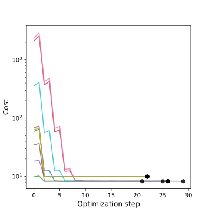
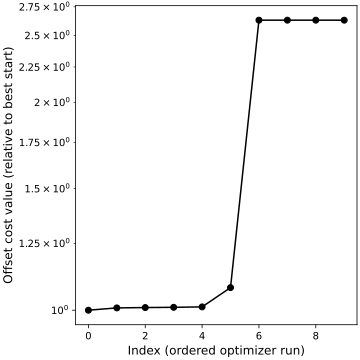
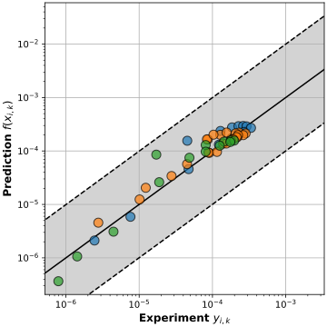
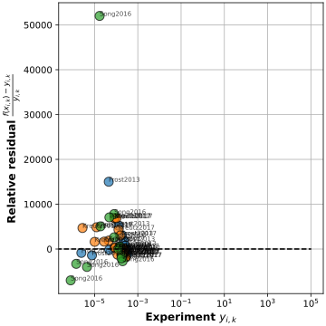
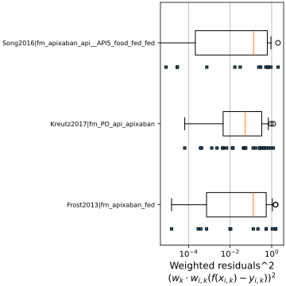
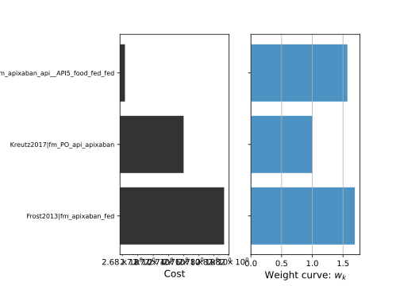
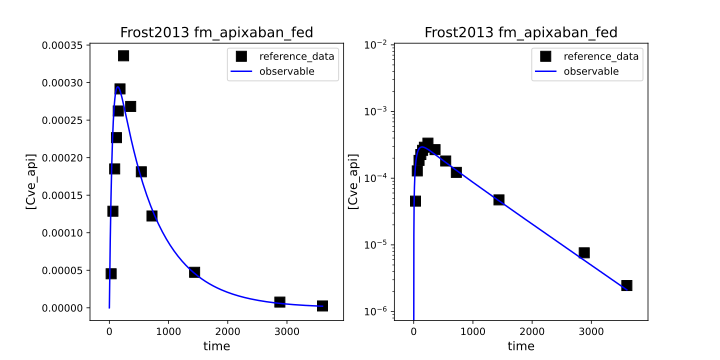
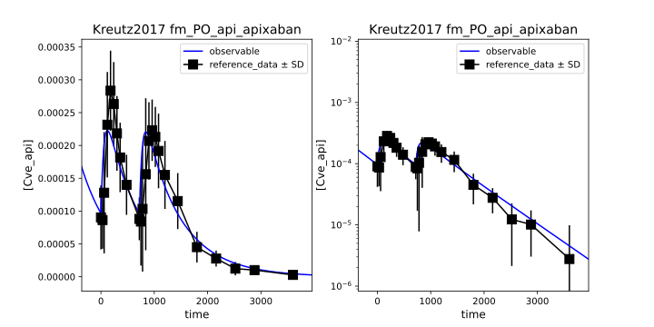
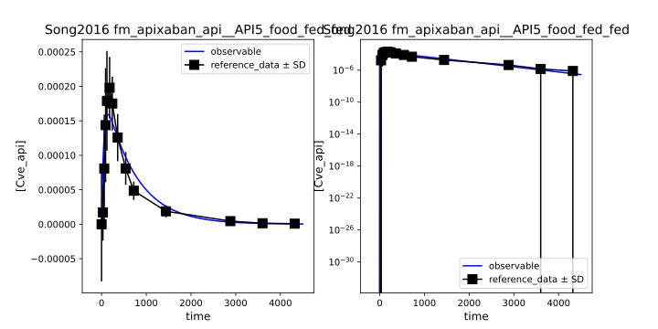

GU__f_absorption: 0.8859416042572498 dimensionless, [0.1 - 10]









| run | success | duration | cost | GU__f_absorption | message | x | x0 | |
|---|---|---|---|---|---|---|---|---|
| 0 | 6 | True | 0.893399 | 8.257353 | 0.885942 | `xtol` termination condition is satisfied. | [0.8859416042572498] | [5.290300391815837] |
| 1 | 0 | True | 0.858856 | 8.265069 | 0.885730 | `xtol` termination condition is satisfied. | [0.8857296623774181] | [1.5297203732652205] |
| 2 | 5 | True | 0.885908 | 8.266248 | 0.887934 | `xtol` termination condition is satisfied. | [0.8879336187319999] | [0.42065625446962185] |
| 3 | 2 | True | 0.770574 | 8.267057 | 0.879602 | `xtol` termination condition is satisfied. | [0.8796021850371221] | [0.7711834128101981] |
| 4 | 9 | True | 0.806656 | 8.268486 | 0.885197 | `xtol` termination condition is satisfied. | [0.8851971265742813] | [2.5741464440854744] |
| 5 | 3 | True | 0.808010 | 8.335641 | 0.909662 | `xtol` termination condition is satisfied. | [0.9096619095910935] | [5.029698415931868] |
| 6 | 4 | True | 0.769749 | 9.887486 | 1.000000 | `xtol` termination condition is satisfied. | [1.0000002504958334] | [1.170140013130859] |
| 7 | 1 | True | 0.681326 | 9.887486 | 1.000000 | `xtol` termination condition is satisfied. | [1.0000002504958334] | [0.18262715155324558] |
| 8 | 7 | True | 0.677125 | 9.887486 | 1.000000 | `xtol` termination condition is satisfied. | [1.0000002504958334] | [0.17592022139935048] |
| 9 | 8 | True | 0.754781 | 9.887486 | 1.000000 | `xtol` termination condition is satisfied. | [1.0000002504958334] | [0.2101050219856777] |